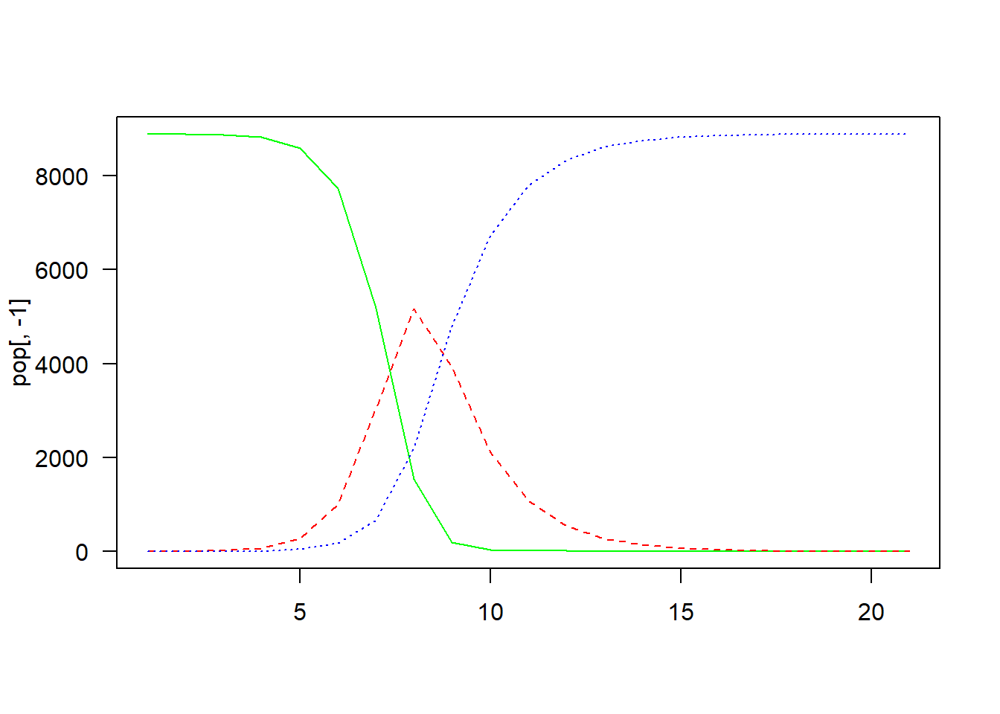
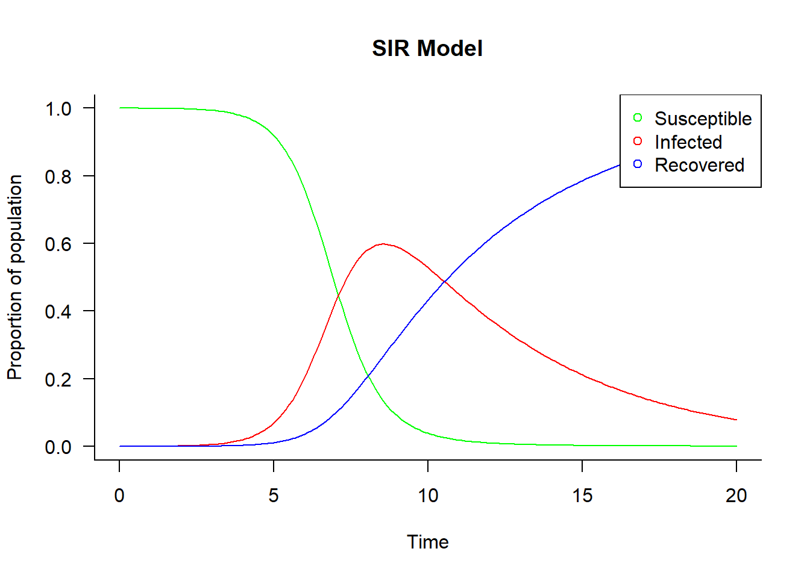
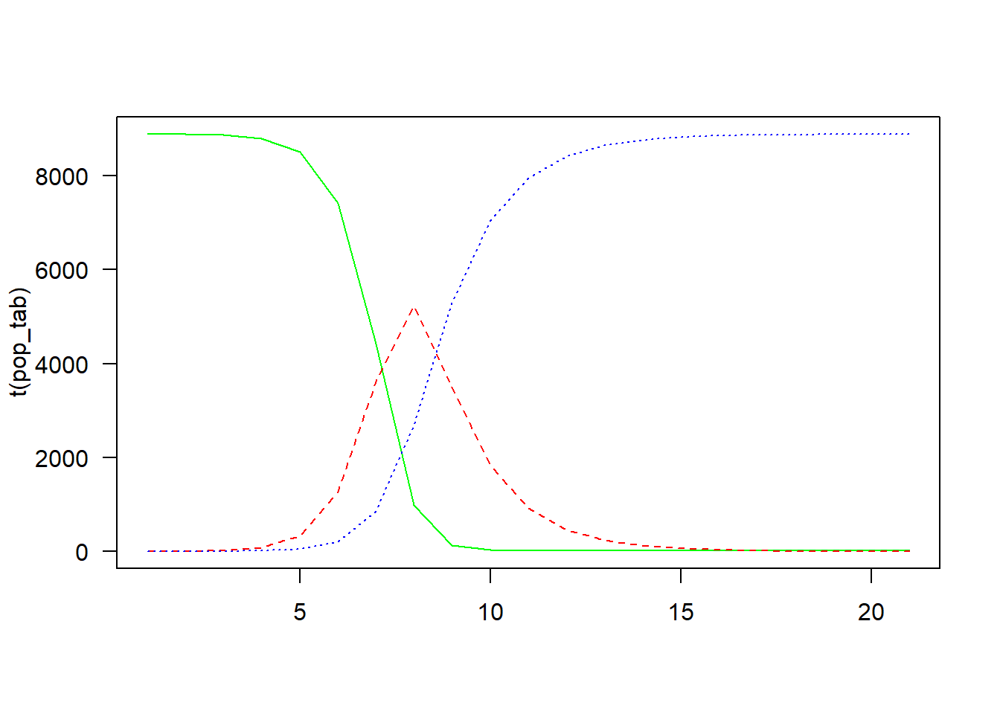
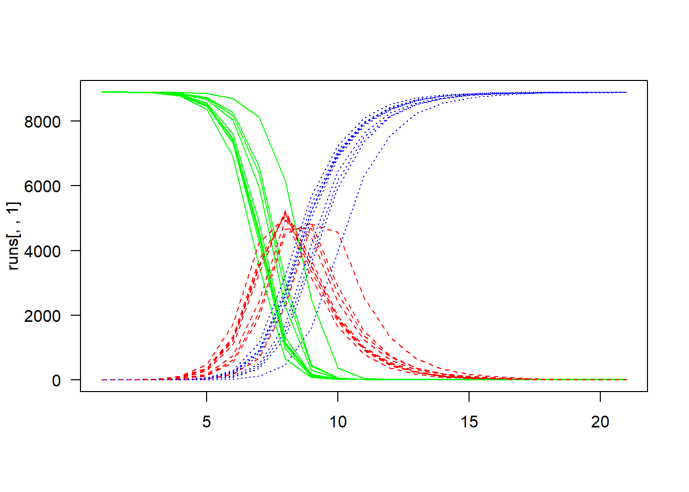

N <- 8900 # population size
t <- 20 # time steps
beta <- 0.0004 # transmission probability
alpha <- 0.5 # recovery probability (corresponding to a duration of 1/0.5=2 time steps)SIR model
Different implementations of the basic SIR model
The classical SIR model is a useful example to understand how disease transmission models are constructed. The SIR model defines three states — susceptible, infectious, and recovered, and assumes that the only possible transitions are from susceptible to infectious, and from infectious to recovered.
Here we implement the SIR model using three different approaches, to show the similarities between these approaches.
Markov chain, discrete
Parameter values
Set up data frame
pop <-
data.frame(
DAY = seq(0, t),
S = numeric(t+1),
I = numeric(t+1),
R = numeric(t+1))
pop$S[1] <- N - 1 # there needs to be 1 infectious person to start
pop$I[1] <- 1
pop$R[1] <- 0Run model
for (i in seq(t)) {
pop$S[i+1] <-
pop$S[i] - pop$S[i] * (1 - (1 - beta)^pop$I[i])
pop$I[i+1] <-
pop$I[i] + pop$S[i] * (1 - (1 - beta)^pop$I[i]) - pop$I[i] * alpha
pop$R[i+1] <-
pop$R[i] + pop$I[i] * alpha
}Plot results
matplot(
pop[, -1],
type = "l",
col = c("green", "red", "blue"),
las = 1)
Markov model, continuous
Settings
## load deSolve package
library(deSolve)Warning: package 'deSolve' was built under R version 4.2.2## create SIR function
sir <- function(time, state, parameters) {
with(as.list(c(state, parameters)), {
dS <- -beta * S * I
dI <- beta * S * I - alpha * I
dR <- alpha * I
return(list(c(dS, dI, dR)))
})
}Initialisation
## proportion in each compartment
init <- c(S = 8699/8700, I = 1/8700, R = 0.0)
## beta: infection parameter; alpha: recovery parameter
parameters <- c(beta = 1.5, alpha = 0.2)
## time frame
times <- seq(0, 20, by = 0.1)Solve using ode (General Solver for Ordinary Differential Equations)
out <- ode(y = init, times = times, func = sir, parms = parameters)Plot results
## change to data frame
out <- as.data.frame(out[, -1])
## plot matrix
matplot(
x = times, y = out, type = "l", las = 1,
xlab = "Time", ylab = "Proportion of population", main = "SIR Model",
lwd = 1, lty = 1, bty = "l", col = c("green", "red", "blue"))
## add legend
legend(
"topright", c("Susceptible", "Infected", "Recovered"),
pch = 1, col = c("green", "red", "blue"))
Agent-based model, one run
Parameter values
N <- 8900 # population size
t <- 20 # iterations
beta <- 0.0004 # transmission probability
alpha <- 0.5 # recovery probability (corresponding to a duration of 1/0.5=2 time steps)Set up data frame
pop <- matrix(nrow = N, ncol = t+1)
pop[, 1] <- c("I", rep("S", N-1))Run model
for (i in seq(t)) {
# identify S/I/R
is_S <- pop[, i] == "S"
is_I <- pop[, i] == "I"
is_R <- pop[, i] == "R"
# calculate transition probability
beta_t <- 1 - (1 - beta)^sum(is_I)
# S may become I or stay S
pop[is_S, i+1] <-
sample(
x = c("I", "S"),
size = sum(is_S),
prob = c(beta_t, 1-beta_t),
replace = TRUE)
# I may become R or stay I
pop[is_I, i+1] <-
sample(
x = c("R", "I"),
size = sum(is_I),
prob = c(alpha, 1-alpha),
replace = TRUE)
# R stays R
pop[is_R, i+1] <- pop[is_R, i]
}Plot
pop_tab <- apply(pop, 2, function(x) table(factor(x, c("S", "I", "R"))))
matplot(
t(pop_tab),
type = "l",
col = c("green", "red", "blue"),
las = 1)
Agent-based model, multiple runs
Parameter values
N <- 8900 # population size
t <- 20 # iterations
beta <- 0.0004 # transmission probability
alpha <- 0.5 # recovery probability (corresponding to a duration of 1/0.5=2 time steps)Set up function
run <-
function() {
# set up population
pop <- matrix(nrow = N, ncol = t+1)
pop[, 1] <- c("I", rep("S", N-1))
# run chains
for (i in seq(t)) {
# identify S/I/R
is_S <- pop[, i] == "S"
is_I <- pop[, i] == "I"
is_R <- pop[, i] == "R"
# calculate transition probability
beta_t <- 1 - (1 - beta)^sum(is_I)
# S may become I or stay S
pop[is_S, i+1] <-
sample(
x = c("I", "S"),
size = sum(is_S),
prob = c(beta_t, 1-beta_t),
replace = TRUE)
# I may become R or stay I
pop[is_I, i+1] <-
sample(
x = c("R", "I"),
size = sum(is_I),
prob = c(alpha, 1-alpha),
replace = TRUE)
# R stays R
pop[is_R, i+1] <- pop[is_R, i]
}
# summarize results
pop_tab <-
t(apply(pop, 2, function(x) table(factor(x, c("S", "I", "R")))))
# return results
return(pop_tab)
}Run model
runs <- replicate(10, run())Plot
matplot(
runs[, , 1],
type = "l",
col = c("green", "red", "blue"),
las = 1)
for (i in seq(2, 10))
matplot(
runs[, , i],
type = "l",
col = c("green", "red", "blue"),
las = 1,
add = TRUE)
R session info
sessionInfo()R version 4.2.1 (2022-06-23 ucrt)
Platform: x86_64-w64-mingw32/x64 (64-bit)
Running under: Windows 10 x64 (build 19045)
Matrix products: default
locale:
[1] LC_COLLATE=English_Belgium.utf8 LC_CTYPE=English_Belgium.utf8
[3] LC_MONETARY=English_Belgium.utf8 LC_NUMERIC=C
[5] LC_TIME=English_Belgium.utf8
attached base packages:
[1] stats graphics grDevices utils datasets methods base
other attached packages:
[1] deSolve_1.34
loaded via a namespace (and not attached):
[1] htmlwidgets_1.5.4 compiler_4.2.1 fastmap_1.1.0 cli_3.6.1
[5] tools_4.2.1 htmltools_0.5.4 rstudioapi_0.14 yaml_2.3.5
[9] rmarkdown_2.26 knitr_1.46 jsonlite_1.8.8 xfun_0.43
[13] digest_0.6.34 rlang_1.1.1 evaluate_0.23